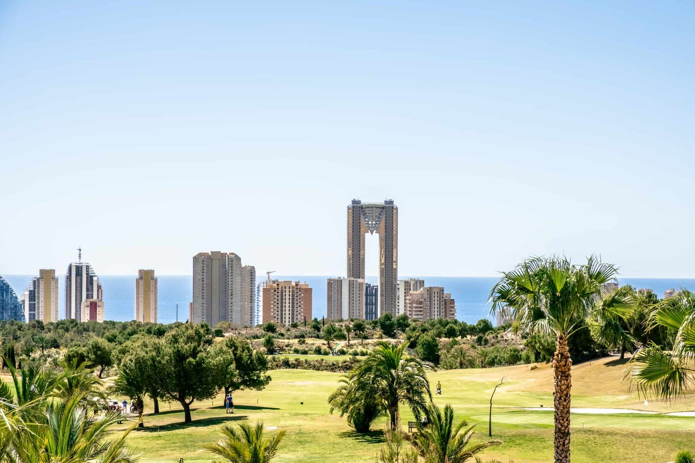
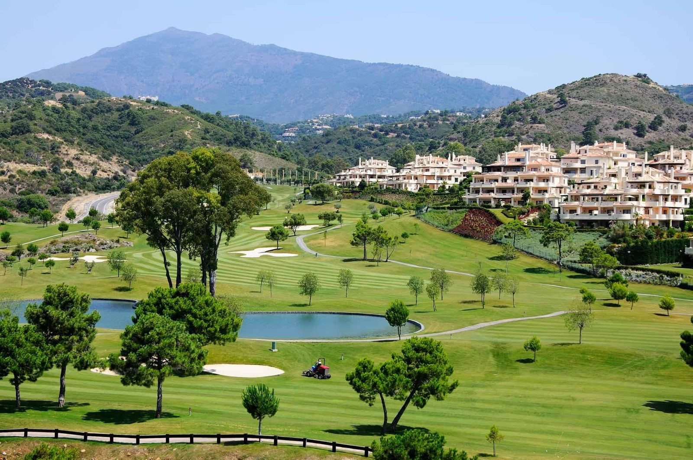
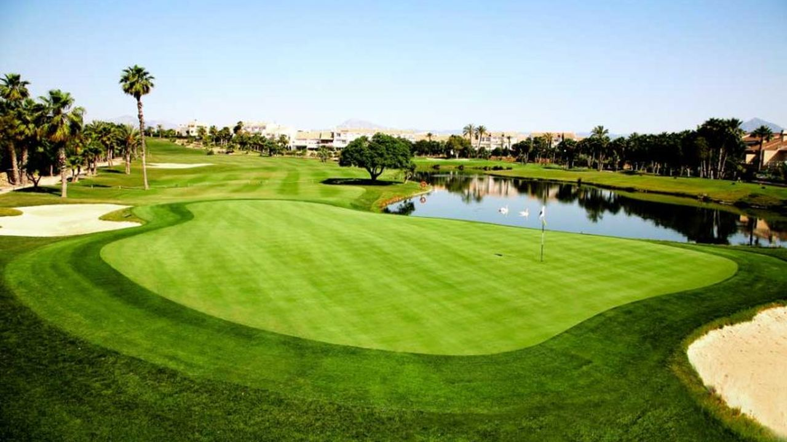

Golf · Spain
Golf properties for sale in Spain
Villas, townhouses and apartments on or near the best golf courses of the Costa Blanca, the Costa del Sol and the Costa Cálida. Choose a coast, then a golf course.
- 142golf properties for sale
- from €207,900for an apartment
- 3coasts
- 300+days of sun a year
Choose a coast
Golf properties on the Costa Blanca, Costa del Sol and Costa Cálida
Spain has some of the best golf in Europe and the sun to play it all year. We sell golf homes on three coasts: the Costa Blanca around Alicante, the Costa del Sol around Marbella, and the Costa Cálida in the Region of Murcia.
The Costa Blanca has more choice at lower prices, with many new resorts in the south and courses close to Alicante airport. The Costa del Sol has the famous golf valleys of Marbella, Benahavís, Estepona and Mijas, with higher prices and more luxury homes. The Costa Cálida, around the Mar Menor, has flat resort courses and the lowest prices of the three.

75 properties · 8 golf resortsGolf properties on the Costa Blanca
Las Colinas, La Finca, Vistabella, Bonalba, Font del Llop, La Marquesa, Puig Campana and Alenda.

33 propertiesGolf properties on the Costa del Sol
Estepona, Casares, Mijas, Marbella and Benahavís.

34 properties · Region of MurciaGolf properties on the Costa Cálida
La Serena, Roda, La Torre, Hacienda del Álamo, El Valle and La Manga Club.
Costa Blanca
Golf resorts on the Costa Blanca
 Orihuela Costa · 12 properties
Orihuela Costa · 12 properties
Las Colinas Golf
Award-winning, low-density resort in a green valley behind Campoamor.
 Algorfa · 18 properties
Algorfa · 18 properties
La Finca Golf
Established resort with a five-star hotel, spa and restaurants.
 Orihuela Costa · 7 properties
Orihuela Costa · 7 properties
Vistabella Golf
Relaxed golf community with good value villas and townhouses.
 Mutxamel · 5 properties
Mutxamel · 5 properties
Bonalba Golf
Golf close to Alicante city, with beaches 10–15 minutes away.
 Monforte del Cid · 4 properties
Monforte del Cid · 4 properties
Font del Llop Golf
New-build golf resort a few minutes from Alicante airport.
 Ciudad Quesada · 20 properties
Ciudad Quesada · 20 properties
La Marquesa Golf
Classic course inside Ciudad Quesada, about 6 km from Guardamar's beaches.
 Finestrat · 8 properties
Finestrat · 8 properties
Puig Campana Golf
Nine holes below the mountain, ten minutes from Benidorm's beaches.
 Monforte del Cid · 5 nearby
Monforte del Cid · 5 nearby
Alenda Golf
Established community with an international school, between Alicante and Elche.
Questions
Buying a golf property in Spain: questions and answers
Costa Blanca or Costa del Sol for a golf home?
The Costa Blanca is cheaper and has many new golf resorts with apartments from about €260,000. The Costa del Sol has more famous courses and a more international, luxury feel, with prices that are usually higher. Many buyers choose by airport and budget.
Do I need to play golf to buy on a golf resort?
No. Many owners do not play. They choose golf resorts for the green views, the quiet, the security and the restaurants and sports clubs. Membership is optional and paid separately.
Can I rent out a golf property?
Often yes, but holiday rental needs a tourist licence from the region and some communities do not allow it. Ask us before you buy and we will check the rules for the home you like.
From our blog
Read before you buy


Looking for a golf home in Spain?
Tell us your budget and what you need. We reply within one working day, in English, German, Spanish or Polish.